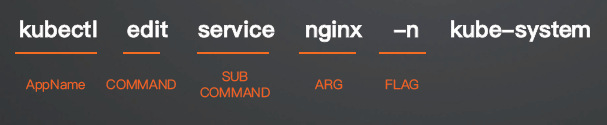

Cobra SDK
社区有很多优秀的 Go 包，例如 spf13/cobra、urfave/cli 等。但当前用的最多的是 cobra。例如：Kubernetes、Docker、Etcd、Hugo 等，均使用 cobra 构建应用。
Cobra 简介
Cobra 是一个用于创建 Golang CLI 应用程序的库，提供了命令行参数解析、自动生成帮助文档和命令补全功能。它简化了多级命令行结构的开发，使开发者能够轻松创建层级命令和子命令。
Cobra 优势
-
很容易实现子命令，类似于 kubectl get pod、kubectl get deployment
-
自动生成 --help flag
-
自动命令建议（针对输错命令的情况）
-
自动生成 bash complete
-
根据命令自动生成使用文档
-
支持设置全局、本地和级联 flag
- 例如对于 kubectl --kubeconfig flag 而言是全局的
-
社区活跃：kubectl、helm、docker 等 cli 工具也用
Cobra 核心概念
- 命令（COMMAND）：命令表示要执行的操作
- 参数（ARG）：命令的参数，一般用来表示操作的对象
- 标志（FLAG）：是命令的修饰，可以调整操作的行为

Quick Start
-
使用 cobra-cli 初始化项目
-
安装 cobra
`go install ``github.com/spf13/cobra-cli@latest` -
创建 k8scopilot
`go mod init ``github.com/ketitongxue/k8scopilot` -
初始化项目：
-
将 go 包安装路径导入到环境变量中
export PATH=/Users/keti/go/bin:$PATH
cobra-cli init --author "aiops" --license mit
- 修改 root.go 描述
var version = "v0.0.1"
// rootCmd represents the base command when called without any subcommands
var rootCmd = &cobra.Command{
Use: "k8scopilot",
Short: "A brief description of your application",
Long: `This is a K8s Copilot tool,以下是一些用法实例:
1. kubectl get pods -n <namespace>
2. kubectl get pods -n <namespace> -o wide
3. kubectl get pods -n <namespace> -o yaml
4. kubectl get pods -n <namespace> -o json`,
Version: version,
// Uncomment the following line if your bare application
// has an action associated with it:
// Run: func(cmd *cobra.Command, args []string) { },
}
- 构建：go build -o k8scopilot
% ./k8scopilot
This is a K8s Copilot tool,以下是一些用法实例:
1. kubectl get pods -n <namespace>
2. kubectl get pods -n <namespace> -o wide
3. kubectl get pods -n <namespace> -o yaml
4. kubectl get pods -n <namespace> -o json
% ./k8scopilot --version
# 或者 ./k8scopilot -v
k8scopilot version v0.0.1
- 添加第一个 command：hello
% cobra-cli add hello
hello created at /Users/keti/Documents/aiops/aiops_Learning/10cobra-cli
会自动在 ~/k8scopilot/cmd/ 生成 hello.go 文件
% go build -o k8scopilot
% ./k8scopilot hello
hello called
添加第多级子命令(subcommand)
% cobra-cli add world -p 'helloCmd'
world created at /Users/keti/Documents/aiops/aiops_Learning/10cobra-cli
- -p 指定子命令所属的父命令(parent)
- 父命令只输出使用方法，不写业务逻辑
% go build -o k8scopilot
% ./k8scopilot hello world
world called
Flag 类型
-
String 类型
\- StringVar(&variable, "flag", "default", "description") ------------> 不带缩写 \- StringVarP(&variable, "flag", "shorthand", "default", "description") --------> 带缩写 \- StringSliceVar(&variable, "flag", []string{}, "description") ---------> 可接受数组, cli 通过传多个 flag \- StringSliceVarP(&variable, "flag", "shorthand", []string{}, "description") -
Bool 类型
\- BoolVar(&variable, "flag", false, "description") \- BoolVarP(&variable, "flag", "shorthand", false, "description") -
Int 类型
\- IntVar(&variable, "flag", 0, "description") \- IntVarP(&variable, "flag", "shorthand", 0, "description") -
Float 类型
\- Float64Var(&variable, "flag", 0.0, "description") \- Float64VarP(&variable, "flag", "shorthand", 0.0, "description")
添加 Flag
-
PersistentFlags：持久 Flag，定义它的命令和子命令都可以使用，例如在 rootCmd 里添加全局 Flag
\- rootCmd.PersistentFlags().StringVarP(&kubeconfig, "kubeconfig", "k", defaultKubeconfig, "kubeconfig file") \- rootCmd.PersistentFlags().StringVarP(&namespace, "namespace", "n", "default", "namespace") \- 在 world.go 里可以直接读取 -
本地 Flags：仅限于定义它的命令可以使用
\- worldCmd.Flags().StringVarP(&Source, "source", "s", "", "Source directory to read from") -
默认 Flag 都是可选的，如果是必须的 Flag 可通过以下方式设置
\- rootCmd.MarkFlagRequired("source") \- 不设置则会报错
示例：
全局
修改 root.go
/*
Copyright © 2025 aiops
Permission is hereby granted, free of charge, to any person obtaining a copy
of this software and associated documentation files (the "Software"), to deal
in the Software without restriction, including without limitation the rights
to use, copy, modify, merge, publish, distribute, sublicense, and/or sell
copies of the Software, and to permit persons to whom the Software is
furnished to do so, subject to the following conditions:
The above copyright notice and this permission notice shall be included in
all copies or substantial portions of the Software.
THE SOFTWARE IS PROVIDED "AS IS", WITHOUT WARRANTY OF ANY KIND, EXPRESS OR
IMPLIED, INCLUDING BUT NOT LIMITED TO THE WARRANTIES OF MERCHANTABILITY,
FITNESS FOR A PARTICULAR PURPOSE AND NONINFRINGEMENT. IN NO EVENT SHALL THE
AUTHORS OR COPYRIGHT HOLDERS BE LIABLE FOR ANY CLAIM, DAMAGES OR OTHER
LIABILITY, WHETHER IN AN ACTION OF CONTRACT, TORT OR OTHERWISE, ARISING FROM,
OUT OF OR IN CONNECTION WITH THE SOFTWARE OR THE USE OR OTHER DEALINGS IN
THE SOFTWARE.
*/
package cmd
import (
"os"
"path/filepath"
"github.com/spf13/cobra"
)
// rootCmd represents the base command when called without any subcommands
var rootCmd = &cobra.Command{
Use: "k8scopilot",
Short: "这是一个K8s copilot 工具",
Long: `这是一个K8s copilot 工具，以下是一些用法示例：
1.
2.
`,
Version: "v0.0.1",
// Uncomment the following line if your bare application
// has an action associated with it:
// Run: func(cmd *cobra.Command, args []string) { },
}
// Execute adds all child commands to the root command and sets flags appropriately.
// This is called by main.main(). It only needs to happen once to the rootCmd.
func Execute() {
err := rootCmd.Execute()
if err != nil {
os.Exit(1)
}
}
var kubeconfig string
var namespace string
func init() {
// Here you will define your flags and configuration settings.
// Cobra supports persistent flags, which, if defined here,
// will be global for your application.
// rootCmd.PersistentFlags().StringVar(&cfgFile, "config", "", "config file (default is $HOME/.k8scopilot.yaml)")
// Cobra also supports local flags, which will only run
// when this action is called directly.
// rootCmd.Flags().BoolP("toggle", "t", false, "Help message for toggle")
homeDir, _ := os.UserHomeDir()
defaultKubeconfig := filepath.Join(homeDir, ".kube", "config")
rootCmd.PersistentFlags().StringVarP(&kubeconfig, "kubeconfig", "k", defaultKubeconfig, "Path to the kubeconfig")
rootCmd.PersistentFlags().StringVarP(&namespace, "namespace", "n", "default", "The namespace to use")
}
测试效果
./k8scopilot --kubeconfig
Error: flag needs an argument: --kubeconfig
Usage:
k8scopilot [command]
Available Commands:
hello A brief description of your command
help Help about any command
Flags:
-h, --help help for k8scopilot
-k, --kubeconfig string Path to the kubeconfig (default "C:\\Users\\keti\\.kube\\config")
-n, --namespace string The namespace to use (default "default")
-v, --version version for k8scopilot
Use "k8scopilot [command] --help" for more information about a command.
./k8scopilot hello world --help
A longer description that spans multiple lines and likely contains examples
and usage of using your command. For example:
Cobra is a CLI library for Go that empowers applications.
This application is a tool to generate the needed files
to quickly create a Cobra application.
Usage:
k8scopilot hello world [flags]
Flags:
-h, --help help for world
Global Flags:
-k, --kubeconfig string Path to the kubeconfig (default "C:\\Users\\keti\\.kube\\config")
-n, --namespace string The namespace to use (default "default")
如何传到子cmd中？
在world中修改 Run 部分
/*
Copyright © 2025 NAME HERE <EMAIL ADDRESS>
*/
package cmd
import (
"fmt"
"github.com/spf13/cobra"
)
// worldCmd represents the world command
var worldCmd = &cobra.Command{
Use: "world",
Short: "A brief description of your command",
Long: `A longer description that spans multiple lines and likely contains examples
and usage of using your command. For example:
Cobra is a CLI library for Go that empowers applications.
This application is a tool to generate the needed files
to quickly create a Cobra application.`,
Run: func(cmd *cobra.Command, args []string) {
fmt.Println("kubeconfig:", kubeconfig)
fmt.Println("namespace:", namespace)
},
}
func init() {
helloCmd.AddCommand(worldCmd)
// Here you will define your flags and configuration settings.
// Cobra supports Persistent Flags which will work for this command
// and all subcommands, e.g.:
// worldCmd.PersistentFlags().String("foo", "", "A help for foo")
// Cobra supports local flags which will only run when this command
// is called directly, e.g.:
// worldCmd.Flags().BoolP("toggle", "t", false, "Help message for toggle")
}
./k8scopilot hello world hello world --kubeconfig abc
kubeconfig: abc
namespace: default
./k8scopilot hello world hello world --kubeconfig abc -n demo
kubeconfig: abc
namespace: demo
Local
var source string
func init() {
helloCmd.AddCommand(worldCmd)
worldCmd.Flags().StringVarP(&source, "source", "s", "world", "The source of the message")
}
./k8scopilot hello world --help
A longer description that spans multiple lines and likely contains examples
and usage of using your command. For example:
This application is a tool to generate the needed files
to quickly create a Cobra application.
Usage:
k8scopilot hello world [flags]
Flags:
-h, --help help for world
-s, --source string The source of the message (default "world")
其他基础设置
-
设置 Version
- 在 root.go &cobra.Command{} 里设置 Version
-
标记命令已废弃
- 在子命令中 &cobra.Command{} 里设置 Deprecated，打印输出提示